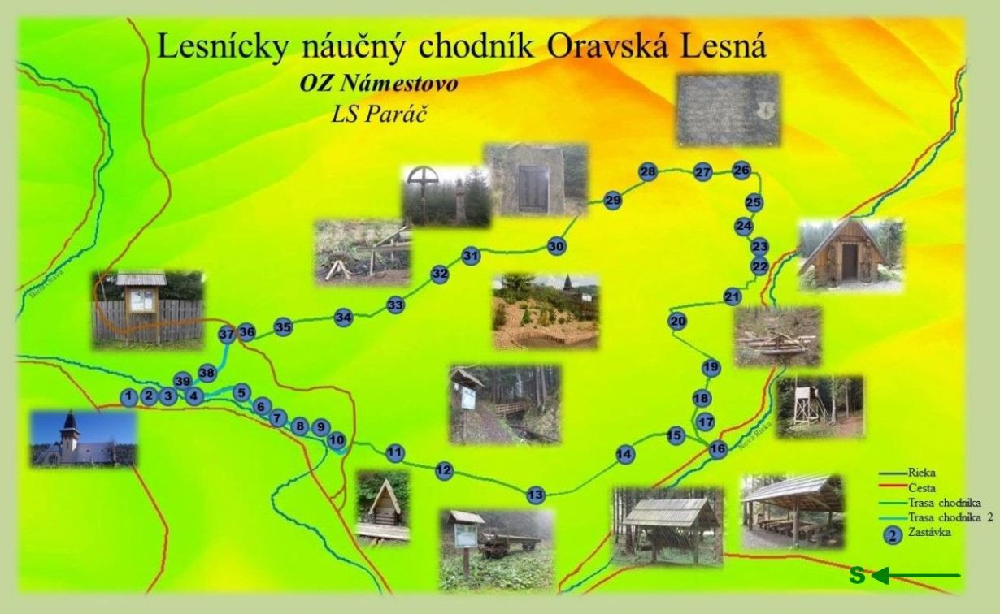

Unikátna príroda Oravskej Lesnej
Príroda v Oravskej Lesnej ponúka veľa možností. Keďže sa jedná o hornatú oblasť nie je problém vybrať si túru pre každého. Medzi najznámejšie patrí napríklad lesnícky náučný chodník alebo vrch Kohútik z ktorého je vidieť Zapadné Tatry aj Malú Fatru.
Mapa náučného chodníka